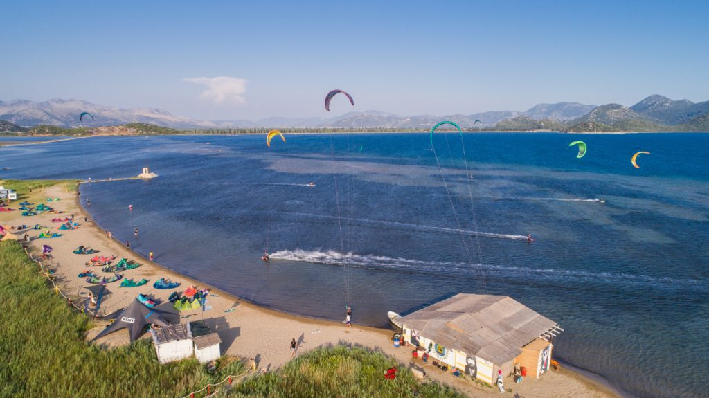

Grado Pineta je za večino nas najbližji kitespot z konstantim vetrom. Pozimi, spomladi in jeseni deluje na burjo. Poleti deluje tud na Maestral in JUgo.
Neretva

Najbolj popularna poletna destinacija za kitesurferje. Na spotu leži slaven "Beachbar".